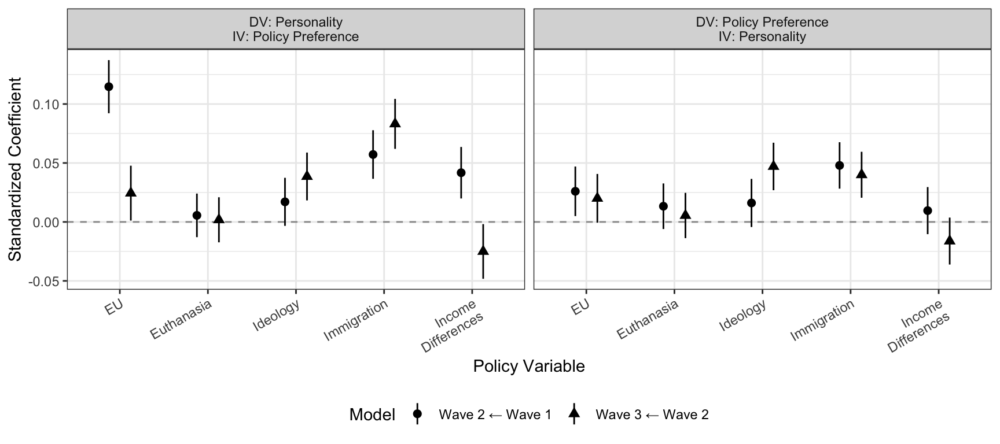
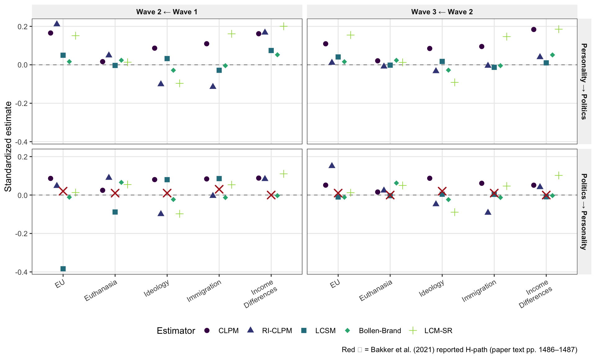

# A tibble: 8 × 4
scale n_items n_obs alpha
<chr> <int> <int> <dbl>
1 Openness 10 72343 0.766
2 Conscientiousness 10 72343 0.785
3 Extraversion 10 72343 0.876
4 Agreeableness 10 72343 0.818
5 Neuroticism 10 72343 0.89
6 PANAS_Positive 10 71887 0.877
7 PANAS_Negative 10 71887 0.932
8 Politics 9 74137 0.76 8 Replication: Bakker, Lelkes, & Malka (2021)
Note
The LISS panel data are proprietary and not redistributed with this package. Code in this chapter is shown but not executed in the public build; run the chapter locally with the LISS files in data/ to see the fitted output.
This chapter relies on the LISS panel analysis from Bakker, Lelkes, and Malka (2021), using crossLagR::estimateCLPM(). Three waves (May 2008, May 2013, May 2019 for personality; Dec 2007–2018 for politics); “closed personality” = openness (reversed) + conscientiousness; and five political items were analyzed, consistent with the models found in Bakker, Lelkes, and Malka (2021). So, this forms a three-wave panel with two observed variables (closed personality and each political item), and we fit a separate CLPM for each political item.
This chapter forms a partial replication of Bakker, Lelkes, and Malka (2021) LISS panel, re-estimates their models with alternative models in crossLagR, and checks the factor structure of the personality items and each Big Five trait’s effects on political preferences, and vice versa, across various specifications. However, the chapter is intended to address a broader topic in political psychology, the relationship between personality and political preferences, and which construct is causally prior.
8.1 Setup
8.2 Reliability (Cronbach’s \(\alpha\))
Here, we identify the LISS personality and political variables and calculate Cronbach’s alpha for each scale.
There are so many variables used in the analysis (with just one x and y) that it’s easier to list them together in a named list, and then just loop through all the names in the list to calculate the alphas. We follow the same approach throughout the analysis.
(alpha-table?) shows that the scales have acceptable reliability.
8.3 Closed Personality
Bakker, Lelkes, and Malka (2021) estimate a CLPM with conscientiousness and openness scales as indicators of a latent “closed personality” factor. These constructs independently (but equally) are included in the regression model, but they constrain “incoming” and “outgoing” paths to be equal across the two constructs. They also account for the fact that the data are in long format (subject x personality construct x wave) and adjust the standard errors accordingly.
We took a somewhat different route by constructing a “closed personality” composite – but do analyze each personality construct separately later this in this chapter. We simply combine the conscientiousness and openness items into a respondent composite score. Aggregating and then disaggregating “closed personality” into its two Big 5 components allows us to check whether the results are driven by one trait or the other. This also sidesteps the issue of whether the two traits should be specified to have equal paths in the CLPM, which is a rather strong assumption. Finally, the crossLagR package, which builds models in lavaan, is designed (or at least biased towards) data that are in wide format (one row per subject, with separate columns for each wave and variable), which makes averaging (or specifying a latent variable) advantageous.
The LISS data we analyze consists of three waves, 2008, 2013, 2019 and a separate CLPM for each of five political items: left–right self-placement, euthanasia, income differences, European integration, immigration.
8.3.1 CLPM Results
We leave the autoregressive and cross-lagged paths unconstrained across waves (so wave-2-on-wave-1 coefficients differ from wave-3-on-wave-2).
We also standardize the variables.
We plot our estimates in ?fig-bakker, which closely replicates the main figure from Bakker, Lelkes, and Malka (2021). Again, we suspect the slight deviations are an artifact of how the personality variables modeled in the CLPM.

Table 8.1 shows the coefficients from the model.
| politics | direction | transition | est | se | pvalue |
|---|---|---|---|---|---|
| euro_unify | DV: Personality | ||||
| IV: Policy Preference | Wave 2 ← Wave 1 | 0.115 | 0.014 | 0.0e+00 | |
| euro_unify | DV: Personality | ||||
| IV: Policy Preference | Wave 3 ← Wave 2 | 0.024 | 0.014 | 8.4e-02 | |
| euro_unify | DV: Policy Preference | ||||
| IV: Personality | Wave 2 ← Wave 1 | 0.026 | 0.013 | 4.2e-02 | |
| euro_unify | DV: Policy Preference | ||||
| IV: Personality | Wave 3 ← Wave 2 | 0.020 | 0.013 | 1.1e-01 | |
| euthenasia | DV: Personality | ||||
| IV: Policy Preference | Wave 2 ← Wave 1 | 0.006 | 0.011 | 6.2e-01 | |
| euthenasia | DV: Personality | ||||
| IV: Policy Preference | Wave 3 ← Wave 2 | 0.002 | 0.012 | 8.8e-01 | |
| euthenasia | DV: Policy Preference | ||||
| IV: Personality | Wave 2 ← Wave 1 | 0.013 | 0.012 | 2.6e-01 | |
| euthenasia | DV: Policy Preference | ||||
| IV: Personality | Wave 3 ← Wave 2 | 0.005 | 0.012 | 6.4e-01 | |
| immigrants | DV: Personality | ||||
| IV: Policy Preference | Wave 2 ← Wave 1 | 0.057 | 0.013 | 4.9e-06 | |
| immigrants | DV: Personality | ||||
| IV: Policy Preference | Wave 3 ← Wave 2 | 0.083 | 0.013 | 0.0e+00 | |
| immigrants | DV: Policy Preference | ||||
| IV: Personality | Wave 2 ← Wave 1 | 0.048 | 0.012 | 6.2e-05 | |
| immigrants | DV: Policy Preference | ||||
| IV: Personality | Wave 3 ← Wave 2 | 0.040 | 0.012 | 7.3e-04 | |
| income_diffs | DV: Personality | ||||
| IV: Policy Preference | Wave 2 ← Wave 1 | 0.042 | 0.013 | 1.7e-03 | |
| income_diffs | DV: Personality | ||||
| IV: Policy Preference | Wave 3 ← Wave 2 | -0.025 | 0.014 | 7.6e-02 | |
| income_diffs | DV: Policy Preference | ||||
| IV: Personality | Wave 2 ← Wave 1 | 0.010 | 0.012 | 4.3e-01 | |
| income_diffs | DV: Policy Preference | ||||
| IV: Personality | Wave 3 ← Wave 2 | -0.016 | 0.012 | 1.8e-01 | |
| left_right | DV: Personality | ||||
| IV: Policy Preference | Wave 2 ← Wave 1 | 0.017 | 0.012 | 1.7e-01 | |
| left_right | DV: Personality | ||||
| IV: Policy Preference | Wave 3 ← Wave 2 | 0.039 | 0.012 | 1.8e-03 | |
| left_right | DV: Policy Preference | ||||
| IV: Personality | Wave 2 ← Wave 1 | 0.016 | 0.012 | 1.9e-01 | |
| left_right | DV: Policy Preference | ||||
| IV: Personality | Wave 3 ← Wave 2 | 0.047 | 0.012 | 1.2e-04 |
8.4 The Intra Class Correlation
The intraclass correlation \(\text{ICC} = \sigma^2_b / (\sigma^2_b + \sigma^2_w)\) gives the share of total variance attributable to stable between-person differences. We estimate it with an empty random-intercept model via lmer: y ~ 1 + (1 | case_id). High ICC means most variance is between-person (trait-like); this is the variance that biases the CLPM cross-lagged coefficients in the next section.
# A tibble: 2 × 2
variable ICC
<chr> <dbl>
1 Closed Personality 0.77
2 Politics Scale 0.665Both politics and personality are reasonably stable – but the ICC is still far from 1.
8.5 Replication with crossLagR Package
The same analysis using crossLagR::estimateCLPM() — the package generates the lavaan syntax automatically and returns fully standardized estimates via lavaan::standardizedSolution(). We used p and q in the code to denote the personality and political variables, respectively, to avoid confusion with the x and y variable names in the lavaan syntax.
| politics | direction | transition | est.std | se | pvalue |
|---|---|---|---|---|---|
| euro_unify | DV: Personality | ||||
| IV: Policy Preference | Wave 2 ← Wave 1 | 0.087 | 0.010 | 0.000 | |
| euro_unify | DV: Personality | ||||
| IV: Policy Preference | Wave 3 ← Wave 2 | 0.052 | 0.009 | 0.000 | |
| euro_unify | DV: Policy Preference | ||||
| IV: Personality | Wave 2 ← Wave 1 | 0.165 | 0.005 | 0.000 | |
| euro_unify | DV: Policy Preference | ||||
| IV: Personality | Wave 3 ← Wave 2 | 0.109 | 0.006 | 0.000 | |
| euthenasia | DV: Personality | ||||
| IV: Policy Preference | Wave 2 ← Wave 1 | 0.025 | 0.010 | 0.014 | |
| euthenasia | DV: Personality | ||||
| IV: Policy Preference | Wave 3 ← Wave 2 | 0.016 | 0.009 | 0.079 | |
| euthenasia | DV: Policy Preference | ||||
| IV: Personality | Wave 2 ← Wave 1 | 0.016 | 0.002 | 0.000 | |
| euthenasia | DV: Policy Preference | ||||
| IV: Personality | Wave 3 ← Wave 2 | 0.021 | 0.002 | 0.000 | |
| immigrants | DV: Personality | ||||
| IV: Policy Preference | Wave 2 ← Wave 1 | 0.084 | 0.010 | 0.000 | |
| immigrants | DV: Personality | ||||
| IV: Policy Preference | Wave 3 ← Wave 2 | 0.061 | 0.009 | 0.000 | |
| immigrants | DV: Policy Preference | ||||
| IV: Personality | Wave 2 ← Wave 1 | 0.110 | 0.005 | 0.000 | |
| immigrants | DV: Policy Preference | ||||
| IV: Personality | Wave 3 ← Wave 2 | 0.095 | 0.005 | 0.000 | |
| income_diffs | DV: Personality | ||||
| IV: Policy Preference | Wave 2 ← Wave 1 | 0.088 | 0.010 | 0.000 | |
| income_diffs | DV: Personality | ||||
| IV: Policy Preference | Wave 3 ← Wave 2 | 0.051 | 0.009 | 0.000 | |
| income_diffs | DV: Policy Preference | ||||
| IV: Personality | Wave 2 ← Wave 1 | 0.162 | 0.006 | 0.000 | |
| income_diffs | DV: Policy Preference | ||||
| IV: Personality | Wave 3 ← Wave 2 | 0.184 | 0.007 | 0.000 | |
| left_right | DV: Personality | ||||
| IV: Policy Preference | Wave 2 ← Wave 1 | 0.080 | 0.010 | 0.000 | |
| left_right | DV: Personality | ||||
| IV: Policy Preference | Wave 3 ← Wave 2 | 0.087 | 0.009 | 0.000 | |
| left_right | DV: Policy Preference | ||||
| IV: Personality | Wave 2 ← Wave 1 | 0.087 | 0.005 | 0.000 | |
| left_right | DV: Policy Preference | ||||
| IV: Personality | Wave 3 ← Wave 2 | 0.085 | 0.005 | 0.000 |
8.6 Accounting for Unit Effects
The CLPM coefficients above leave one obvious question: would Bakker’s substantive conclusion survive an estimator that actually partitions between- from within-person variance? The CLPM treats every wave of variation as wave-specific. With the closed-personality composite ICC at ~0.6 (next section), that’s almost certainly mis-attributing trait variance to autoregression and attenuating cross-lags. We refit the same data with four alternatives from the Usami, Murayama, and Hamaker (2019) unified family — RI-CLPM, Latent Change Score, Bollen & Brand, and GCLM.
8.6.1 RI-CLPM
The RI-CLPM extracts a stable trait component for both closed and the politics item, then estimates AR/CL on the within-person deviations from those traits.
8.6.2 Latent Change Score Model
The LCSM rewrites the dynamic in terms of wave-to-wave changes rather than levels, with an accumulating constant-change factor to absorb stable trajectories – heterogeneity in the change process. The cross-lag interpretation flips: cl_xy is now level of politics at \(t-1\) predicts the change in closed personality between \(t-1\) and \(t\), for instance.
8.6.3 Bollen-Brand CLPM
Bollen & Brand absorb unit-specific heterogeneity into a latent fixed effect — the SEM analogue of Arellano-Bond — and condition on the first wave as exogenous. The RI-CLPM assumes indepedence between the trait and state components. The Bollen-Brand model includes covariances between the latent fixed effect and the observed variables at each wave, which allows for correlation between the trait and state components.
8.6.4 LCM-SR
The Latent Curve Model with Structured Residuals (also called the GCLM) fits a bivariate latent growth model and then estimates AR/CL dynamics on the residuals from each person’s trajectory.
Figure 8.2 and Table 8.3 provides a comparison of the estimates.

| politics | direction | transition | CLPM | RI-CLPM | LCSM | Bollen-Brand | LCM-SR |
|---|---|---|---|---|---|---|---|
| euro_unify | Personality → Politics | Wave 2 ← Wave 1 | 0.165*** | 0.211*** | 0.05** | 0.016 | 0.152 |
| euro_unify | Personality → Politics | Wave 3 ← Wave 2 | 0.109*** | 0.011 | 0.041* | 0.016 | 0.155 |
| euro_unify | Politics → Personality | Wave 2 ← Wave 1 | 0.087*** | 0.048 | -0.384 | -0.011 | 0.013 |
| euro_unify | Politics → Personality | Wave 3 ← Wave 2 | 0.052*** | 0.151*** | -0.01† | -0.012 | 0.012 |
| euthenasia | Personality → Politics | Wave 2 ← Wave 1 | 0.016*** | 0.049 | -0.003 | 0.024 | 0.014 |
| euthenasia | Personality → Politics | Wave 3 ← Wave 2 | 0.021*** | -0.009 | -0.002 | 0.023 | 0.013 |
| euthenasia | Politics → Personality | Wave 2 ← Wave 1 | 0.025* | 0.09* | -0.088 | 0.066** | 0.055 |
| euthenasia | Politics → Personality | Wave 3 ← Wave 2 | 0.016† | 0.024 | -0.003 | 0.062** | 0.05 |
| immigrants | Personality → Politics | Wave 2 ← Wave 1 | 0.11*** | -0.115* | -0.028 | -0.005 | 0.161 |
| immigrants | Personality → Politics | Wave 3 ← Wave 2 | 0.095*** | -0.005 | -0.013 | -0.004 | 0.147 |
| immigrants | Politics → Personality | Wave 2 ← Wave 1 | 0.084*** | -0.004 | 0.086 | -0.013 | 0.054 |
| immigrants | Politics → Personality | Wave 3 ← Wave 2 | 0.061*** | -0.092* | 0.004 | -0.013 | 0.047 |
| income_diffs | Personality → Politics | Wave 2 ← Wave 1 | 0.162*** | 0.168*** | 0.074 | 0.052† | 0.201† |
| income_diffs | Personality → Politics | Wave 3 ← Wave 2 | 0.184*** | 0.04 | 0.01 | 0.051† | 0.185† |
| income_diffs | Politics → Personality | Wave 2 ← Wave 1 | 0.088*** | 0.083* | NA | -0.003 | 0.11 |
| income_diffs | Politics → Personality | Wave 3 ← Wave 2 | 0.051*** | 0.041 | -0.009† | -0.003 | 0.102 |
| left_right | Personality → Politics | Wave 2 ← Wave 1 | 0.087*** | -0.101* | 0.032* | -0.028 | -0.097 |
| left_right | Personality → Politics | Wave 3 ← Wave 2 | 0.085*** | -0.033 | 0.018† | -0.028 | -0.091 |
| left_right | Politics → Personality | Wave 2 ← Wave 1 | 0.08*** | -0.099* | 0.08 | -0.023 | -0.098 |
| left_right | Politics → Personality | Wave 3 ← Wave 2 | 0.087*** | -0.048 | 0.004 | -0.024 | -0.089 |
8.7 The Factor Structure of the Big Five
We fit a confirmatory five-factor model spanning the full Big Five — Extraversion, Agreeableness, Conscientiousness, Neuroticism, and Openness — each measured by its 10 IPIP-50 items. Factors are allowed to correlate freely. Each item is constrained to load only on its expected (a priori) factor; no cross-loadings are estimated.
The model fits reasonably well. The CFI and TLI are on the low end, but the RMSEA is good.
big5_items <- list(
Extraversion = c(
"life_party", "dont_talk", "comfortable", "stay_in_back",
"start_convos", "say_little", "talk_at_parties",
"avoid_attention", "like_attention", "quiet"
),
Agreeableness = c(
"no_concern", "interest_people", "insult_people",
"sympathize", "no_care_probs", "soft_heart",
"no_interest_probs", "time_for_others", "feel_emotions",
"others_at_ease"
),
Conscientiousness = c(
"always_prepared", "leave_belongings", "pay_attention",
"make_mess", "chores_done", "forget_to_put", "like_order",
"shirk_duties", "follow_sched", "exacting"
),
Neuroticism = c(
"stress_easy", "relaxed", "worry", "easy_disturb",
"upset_easily", "seldom_blue", "often_blue", "change_mood",
"mood_swings", "irritate_easy"
),
Openness = c(
"rich_vocab", "dffclt_undrstnd", "vivid_imagin", "no_interest",
"excellent_ideas", "poor_imagin", "quick_undrstnd",
"dffclt_words", "reflecting", "full_of_ideas"
)
)
cfa_syntax <- "
Extraversion =~ life_party + dont_talk + comfortable + stay_in_back +
start_convos + say_little + talk_at_parties + avoid_attention +
like_attention + quiet
Agreeableness =~ no_concern + interest_people + insult_people + sympathize +
no_care_probs + soft_heart + no_interest_probs + time_for_others +
feel_emotions + others_at_ease
Conscientiousness =~ always_prepared + leave_belongings + pay_attention + make_mess +
chores_done + forget_to_put + like_order + shirk_duties + follow_sched + exacting
Neuroticism =~ stress_easy + relaxed + worry + easy_disturb + upset_easily +
seldom_blue + often_blue + change_mood + mood_swings + irritate_easy
Openness =~ rich_vocab + dffclt_undrstnd + vivid_imagin + no_interest +
excellent_ideas + poor_imagin + quick_undrstnd + dffclt_words +
reflecting + full_of_ideas
Closed =~ Openness + Conscientiousness
"
big5_names <- unlist(big5_items, use.names = FALSE)
cfa_dat <- liss_long |>
select(all_of(big5_names))
cfa_fit <- cfa(cfa_syntax,
data = cfa_dat,
missing = "fiml",
std.lv = TRUE
)
cat("n_obs =", nrow(cfa_dat),
"; n_complete =", sum(complete.cases(cfa_dat)),
"; n_miss =", sum(is.na(cfa_dat)),
"\n")
fitMeasures(cfa_fit, c(
"cfi", "tli", "rmsea", "rmsea.ci.lower",
"rmsea.ci.upper", "srmr"
)) |>
round(3) |>
as.list() |>
as_tibble() |>
knitr::kable(caption = "Hierarchical CFA (Big Five + higher-order Closed): global fit.")
standardizedSolution(cfa_fit) |>
filter(op == "=~") |>
select(factor = lhs, item = rhs, est.std, se, pvalue) |>
mutate(across(c(est.std, se), \(x) round(x, 3)),
pvalue = signif(pvalue, 2)
) |>
knitr::kable(caption = "Standardized loadings (each item on its expected factor).")
standardizedSolution(cfa_fit) |>
filter(op == "~~", lhs != rhs,
lhs %in% c(names(big5_items), "Closed"),
rhs %in% c(names(big5_items), "Closed")) |>
select(factor1 = lhs, factor2 = rhs, est.std, se, pvalue) |>
mutate(across(c(est.std, se), \(x) round(x, 3)),
pvalue = signif(pvalue, 2)
) |>
knitr::kable(caption = "Standardized factor correlations/covariances among latent factors.")8.7.1 Estimates for Each Big Five Personality Trait
We now repeat the CLPM and RI-CLPM analyses for each Big Five trait individually (not just the closed-personality composite) against all five political items, and report ICCs for each trait.
8.7.1.1 ICCs by Trait
| trait | ICC |
|---|---|
| Extraversion | 0.8058 |
| Agreeableness | 0.7152 |
| Conscientiousness | 0.7442 |
| Neuroticism | 0.7523 |
| Openness | 0.7504 |
| Politics Scale | 0.6654 |
8.7.1.2 All Estimators for Each Trait × Political Item
| trait | politics | direction | CLPM | RI-CLPM | LChange | Bollen-Brand | LCM-SR |
|---|---|---|---|---|---|---|---|
| Agreeableness | euro_unify | Personality → Politics | 0.133*** | 0.078 | NA | 0.023 | 0.194 |
| Agreeableness | euro_unify | Politics → Personality | 0.063*** | -0.015 | 0.074 | -0.021 | 0.132 |
| Agreeableness | euthenasia | Personality → Politics | 0.021*** | 0.047 | 0.106 | 0.035† | 0.064 |
| Agreeableness | euthenasia | Politics → Personality | 0.02 | 0.004 | 0.025 | 0.009 | 0.229 |
| Agreeableness | immigrants | Personality → Politics | 0.09*** | 0.046 | 0.108 | 0.023 | 0.396† |
| Agreeableness | immigrants | Politics → Personality | 0.065*** | 0.005 | -0.729* | 0.002 | 0.097 |
| Agreeableness | income_diffs | Personality → Politics | 0.196*** | -0.006 | -0.174 | -0.01 | -0.198 |
| Agreeableness | income_diffs | Politics → Personality | 0.085*** | -0.017 | 0.857† | -0.012 | -0.082 |
| Agreeableness | left_right | Personality → Politics | 0.08*** | -0.003 | -0.122 | -0.006 | 0.221 |
| Agreeableness | left_right | Politics → Personality | 0.096*** | 0.046 | -0.072 | 0.059* | 0.115 |
| Conscientiousness | euro_unify | Personality → Politics | 0.15*** | 0.113* | NA | 0.043† | 0.289 |
| Conscientiousness | euro_unify | Politics → Personality | 0.079*** | 0.026 | 0.188 | -0.042* | 0.166 |
| Conscientiousness | euthenasia | Personality → Politics | 0.023*** | 0.074 | -0.077 | 0.046* | 0.274 |
| Conscientiousness | euthenasia | Politics → Personality | 0.033* | 0.08 | 0.106 | 0.079** | 0.125 |
| Conscientiousness | immigrants | Personality → Politics | 0.11*** | 0.024 | -0.41 | 0.012 | 0.395 |
| Conscientiousness | immigrants | Politics → Personality | 0.081*** | 0.007 | -0.734* | -0.004 | 0.135 |
| Conscientiousness | income_diffs | Personality → Politics | 0.191*** | 0.062 | 1.543 | 0.021 | 0.067 |
| Conscientiousness | income_diffs | Politics → Personality | 0.082*** | 0.003 | 1.148† | -0.01 | 0.033 |
| Conscientiousness | left_right | Personality → Politics | 0.097*** | -0.023 | -0.739 | -0.003 | 0.165 |
| Conscientiousness | left_right | Politics → Personality | 0.106*** | -0.011 | -0.676 | 0 | 0.125 |
| Extraversion | euro_unify | Personality → Politics | 0.161*** | -0.024 | NA | 0.025 | 0.085 |
| Extraversion | euro_unify | Politics → Personality | 0.067*** | -0.082* | -0.06 | -0.02 | 0.008 |
| Extraversion | euthenasia | Personality → Politics | 0.03*** | 0.099* | -0.216 | 0.051* | 0.004 |
| Extraversion | euthenasia | Politics → Personality | 0.026* | 0.046 | -0.065 | 0.031 | 0.001 |
| Extraversion | immigrants | Personality → Politics | 0.114*** | 0.046 | -0.27 | 0.006 | 0.37† |
| Extraversion | immigrants | Politics → Personality | 0.059*** | 0.013 | 0.118 | 0.008 | 0.069 |
| Extraversion | income_diffs | Personality → Politics | 0.192*** | -0.033 | 0.069 | 0.017 | -0.176 |
| Extraversion | income_diffs | Politics → Personality | 0.071*** | -0.042 | -1.096* | -0.013 | -0.061 |
| Extraversion | left_right | Personality → Politics | 0.111*** | -0.027 | 0.446 | -0.008 | 0.063 |
| Extraversion | left_right | Politics → Personality | 0.077*** | -0.05 | -0.79† | -0.036† | -0.011 |
| Neuroticism | euro_unify | Personality → Politics | 0.177*** | 0.025 | NA | 0.002 | -0.118 |
| Neuroticism | euro_unify | Politics → Personality | 0.116*** | 0.005 | 0.105 | 0.023 | -0.145 |
| Neuroticism | euthenasia | Personality → Politics | 0.043*** | 0.039 | -0.12 | -0.024 | -0.121 |
| Neuroticism | euthenasia | Politics → Personality | 0.056*** | 0.025 | 0.02 | -0.028 | -0.026 |
| Neuroticism | immigrants | Personality → Politics | 0.141*** | 0.021 | 0.637** | -0.008 | -0.352 |
| Neuroticism | immigrants | Politics → Personality | 0.112*** | 0.014 | 0.028 | 0.017 | -0.06 |
| Neuroticism | income_diffs | Personality → Politics | 0.188*** | -0.027 | -1.223* | -0.026 | -0.311 |
| Neuroticism | income_diffs | Politics → Personality | 0.109*** | 0.017 | 0.851† | 0.006 | -0.046 |
| Neuroticism | left_right | Personality → Politics | 0.099*** | 0.007 | 0.658* | 0.016 | -0.259 |
| Neuroticism | left_right | Politics → Personality | 0.099*** | 0.003 | 0.428 | 0.019 | -0.099 |
| Openness | euro_unify | Personality → Politics | 0.128*** | -0.024* | NA | 0.027 | -0.258 |
| Openness | euro_unify | Politics → Personality | 0.076*** | -0.078 | 0.088 | -0.025 | -0.072 |
| Openness | euthenasia | Personality → Politics | 0.023*** | 0.045 | -0.262 | 0.023 | 0.319 |
| Openness | euthenasia | Politics → Personality | 0.034** | 0.004 | -0.599* | -0.011 | 0.061 |
| Openness | immigrants | Personality → Politics | 0.09*** | 0.096† | 0.483 | 0.014 | 0.346 |
| Openness | immigrants | Politics → Personality | 0.067*** | 0.064 | -0.028 | 0.016 | 0.09 |
| Openness | income_diffs | Personality → Politics | 0.184*** | -0.073 | -0.728 | -0.031 | -0.262† |
| Openness | income_diffs | Politics → Personality | 0.087*** | -0.081* | 0.4 | -0.002 | -0.102 |
| Openness | left_right | Personality → Politics | 0.085*** | 0.067 | 0.401 | 0.025 | 0.264† |
| Openness | left_right | Politics → Personality | 0.093*** | 0.09† | -0.129 | 0.035 | 0.154 |
Bakker, Bert N., Yphtach Lelkes, and Ariel Malka. 2021. “Reconsidering the Link Between Self-Reported Personality Traits and Political Preferences.” American Political Science Review 115 (4): 1482–98. https://doi.org/10.1017/S0003055421000605.
Usami, Satoshi, Kou Murayama, and Ellen L. Hamaker. 2019. “A Unified Framework of Longitudinal Models to Examine Reciprocal Relations.” Psychological Methods 24 (5): 637–57. https://doi.org/10.1037/met0000210.